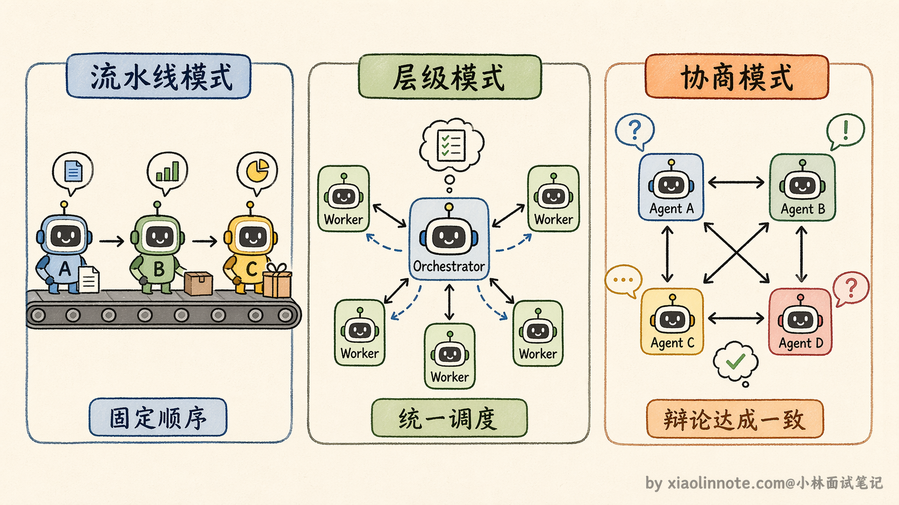
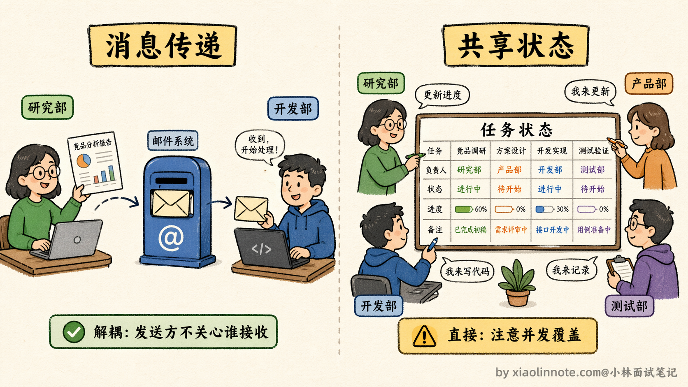
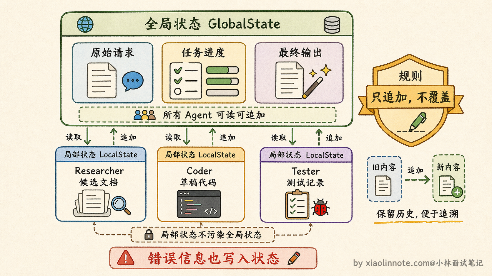
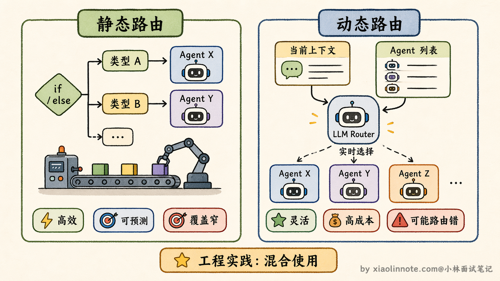
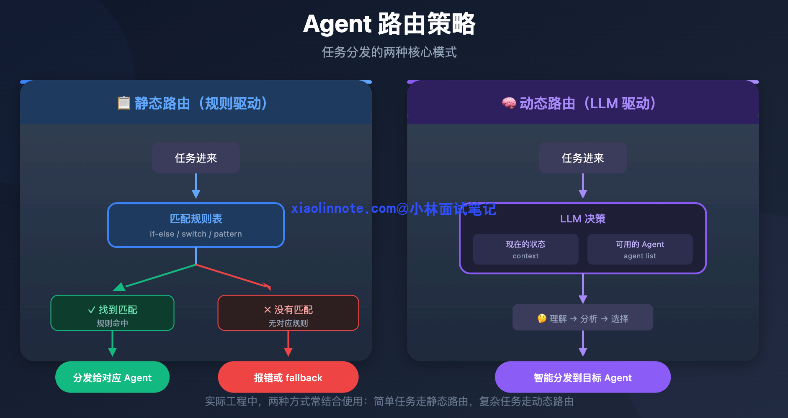
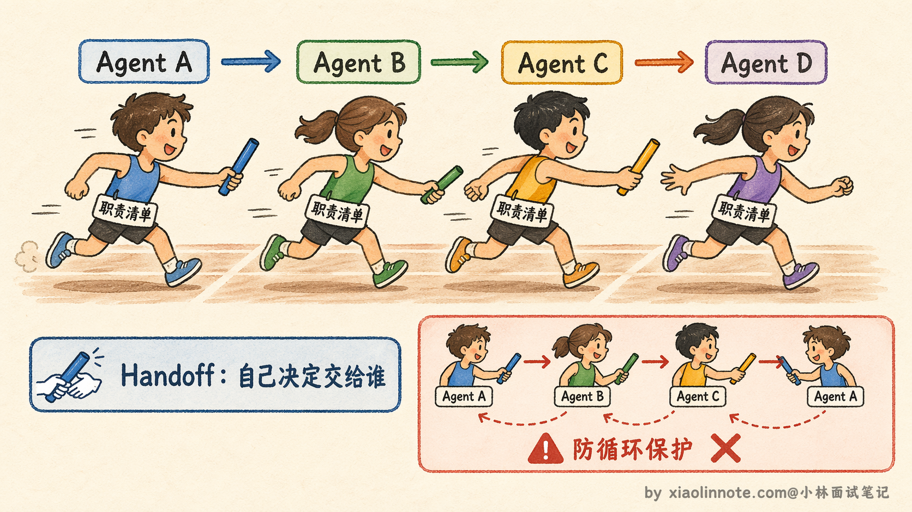
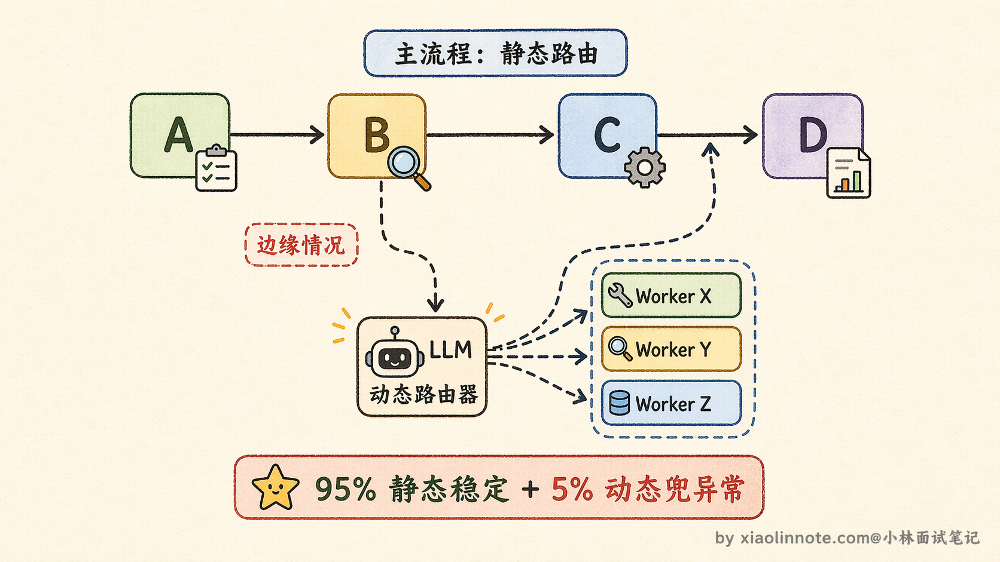

如何设计多 Agent 的协作与动态切换机制？
👔面试官：多 Agent 系统里，各个 Agent 之间怎么协作？
🙋♂️我：一个 Agent 做完之后把结果传给下一个 Agent，就像流水线一样，一步步往下走。
👔面试官：你说的是流水线，但「传结果」具体怎么传？消息传递和共享状态是两种不同的方案，适用场景也不一样，你区分得开吗？
🙋♂️我：消息传递就是 Agent 之间直接发消息，共享状态就是大家都能读写同一个变量……应该都差不多吧？
👔面试官：差很远。消息传递的核心优势是解耦，发送方不需要知道谁在接收；共享状态的优势是直接，前一步写进去后一步直接读。这两种选哪个，取决于 Agent 之间的依赖关系强不强。那动态切换呢，你是怎么做的？
🙋♂️我：动态切换就是让 LLM 判断下一步该调用哪个 Agent，每次根据当前情况动态决策，这样最灵活。
👔面试官：全靠 LLM 动态决策的问题是什么？每次路由都要多一次 LLM 调用，而且 LLM 偶尔会路由错，系统行为的可预测性就没了。你有没有想过，静态路由和动态路由应该怎么配合用？
被问到这里，才意识到协作和切换都是有设计取舍的，不是「传结果」和「LLM 决策」几个字就能概括的。
💡 简要回答
协作靠两件事：消息传递和共享状态。消息传递是 Agent 完成自己的工作后把结果发出去，下一个 Agent 取用；共享状态是所有 Agent 共同读写一个状态对象，记录任务进展和中间结果。
动态切换靠 Orchestrator 来做，有两种方式：一种是静态路由，提前写好规则「任务类型 A 就找 Agent X」；另一种是让 LLM 动态决策，根据当前情况实时判断该把任务交给谁。
我的实践是两种混用，主流程用静态路由保证稳定，边缘情况才交给 LLM 动态判断。
📝 详细解析
多 Agent 系统里，分工解决了「谁来做什么」的问题，但还有另一个问题没解决：各个 Agent 做完自己的事之后，怎么把结果传给下一个 Agent？下一步该叫哪个 Agent 来接棒？这就是协作机制和切换机制要解决的事。
在展开细节之前，先从全局视角理解一下多 Agent 协作的几种主要模式。工程实践中常见的协作模式大致分为三类：
- 第一类是流水线模式，Agent 之间按固定顺序依次执行，前一个完成后交给下一个，像工厂的装配线；
- 第二类是层级模式，有一个 Orchestrator（指挥者）负责分配任务、收集结果，其他 Agent 各自执行分配到的子任务；
- 第三类是协商模式，多个 Agent 之间没有严格的上下级关系，通过互相沟通、辩论来达成一致。
这三种模式不是互斥的，一个复杂系统里经常会混合使用。理解了这个大分类之后，再来看具体的通信方式和路由策略就很清晰了。

先说协作：Agent 之间怎么传递信息
你可以把多 Agent 系统想象成一个公司里的多个部门：研究部、开发部、测试部各司其职。部门之间传递信息，有两种方式。
- 第一种方式，像发邮件。研究部完成了资料整理，就把报告「发」出去，开发部收到邮件后再开始工作。这就是「消息传递」的思路，Agent 完成自己的工作后把结果发送到一个消息队列，下游的 Agent 订阅自己感兴趣的消息，取到了再开始处理。这种方式最大的优点是解耦，研究 Agent 不需要知道谁在等它的结果，只管发；接收方也不需要知道消息是谁发的，只管处理。缺点是需要一个「邮件服务器」，也就是消息中间件来维护这套机制，部署成本稍高一些。
- 第二种方式，像共享白板。公司里所有部门都盯着同一块白板，上面写着「当前任务是什么、进展到哪一步了、各部门完成了什么」。研究部写上「资料整理完成」，开发部一看，知道可以开始了，于是接手并写上「代码开发中」。这就是「共享状态」的思路，所有 Agent 都读写同一个状态对象。LangGraph 就是用这个思路来设计的，它有一个贯穿所有 Agent 的 State，每个 Agent 执行完就往 State 里写入自己的结果，下一个 Agent 直接从 State 里读取前面的产出。
这两种方式怎么选？如果各 Agent 之间的依赖关系比较强，前一步的结果要直接传给后一步，用共享状态更直接。如果你希望 Agent 之间尽量解耦，互相不知道对方的存在，用消息传递更合适。

状态管理：多 Agent 共享状态的设计要点
既然提到了共享状态，这里有必要展开聊一下状态管理的设计，因为这是多 Agent 系统里最容易出 bug 的地方之一。
为什么状态管理这么重要？你想，多个 Agent 都在读写同一个状态对象，如果设计不好，很容易出现一个 Agent 写入的结果被另一个 Agent 意外覆盖，或者读到了一半更新的脏数据。这就像公司那块共享白板，如果没有任何规则，两个人同时往白板上写东西，写完之后谁也看不懂。
工程上设计共享状态时有几个关键点需要考虑。
首先是状态结构要分层，通常会把状态分成「全局状态」和「局部状态」两层。全局状态存放所有 Agent 都需要读取的信息，比如用户的原始请求、当前任务进展、最终输出，这些是共享的。
局部状态存放每个 Agent 自己的中间结果，比如搜索 Agent 找到的候选文档列表、代码 Agent 生成的草稿代码，这些在 Agent 内部使用，不会直接暴露给其他 Agent，避免信息污染。
其次是写入规则要明确。最简单也最可靠的做法是「只追加不覆盖」，每个 Agent 完成工作后把结果追加到状态里，而不是修改已有的字段。LangGraph 的 State 更新机制就是这个思路，你定义好 State 的 schema，每个节点返回的是一个「增量更新」，框架帮你合并到全局状态里，这样就不会出现互相覆盖的问题。
最后是错误状态的处理。如果某个 Agent 执行失败了，它的错误信息也应该写入状态，而不是悄悄吞掉。后续的 Agent 或者 Orchestrator 读到这个错误状态后，才能做出正确的决策，比如跳过这一步、换一个 Agent 重试、或者直接终止任务。

再说切换：Orchestrator 怎么决定叫谁
「切换」就是决定下一步把任务交给哪个 Agent，这个决策动作在系统里叫做「路由」。Orchestrator 就是那个负责做路由决策的角色。
路由有两种策略。
静态路由，就是提前把规则写死。比如任务描述里包含「搜索」就找 Researcher Agent，当前步骤已经是「代码写完了」就找 Reviewer Agent，找不到匹配规则就回到 Orchestrator 兜底。
这就像工厂流水线，每道工序完成后，下一步去哪个工位是固定的，效率高、可预测、好调试。但它覆盖不了你没预料到的情况，如果任务走了一条你没定义规则的路径，系统就不知道该怎么办了。
动态路由，则是把「下一步找谁」的决策权交给 LLM 来做。Orchestrator 把当前任务描述、已经完成了什么、还有哪些 Agent 可以调用，全部告诉 LLM，让它判断「现在应该叫哪个 Agent 来做下一步」。
这种方式的优点是灵活，能处理任何你没预先设计的路径，任务走到一个边缘情况时，LLM 也能做出合理判断。缺点是每次路由都要多一次 LLM 调用，增加了延迟和成本，而且 LLM 偶尔也会路由错，系统行为的可预测性就降低了。

两种路由策略的对比可以用一张图来理解：

动态路由在代码层面是怎么实现的？其实核心就是让 LLM 做一次分类决策，把可用的 Agent 列表和当前上下文传给它，让它返回应该调用哪个 Agent。下面是一个简化的示例：
def dynamic_route(task_context: str, available_agents: list[str]) -> str:
"""让 LLM 根据当前上下文决定下一步调用哪个 Agent"""
prompt = f"""当前任务状态：
{task_context}
可用的 Agent：
{chr(10).join(f'- {agent}' for agent in available_agents)}
请根据当前进展，判断下一步应该交给哪个 Agent 来执行。
只返回 Agent 名称，不需要解释。"""
response = client.chat.completions.create(
model="gpt-4",
messages=[{"role": "user", "content": prompt}]
)
selected = response.choices[0].message.content.strip()
return selected # 返回选中的 Agent 名称
实际项目里通常还会加一些保护措施，比如校验返回的 Agent 名称是否在可用列表中、设置默认的 fallback Agent、记录路由决策的日志以便后续分析等。
Handoff 模式：Agent 之间的「接力棒」
除了由 Orchestrator 集中做路由决策，还有一种更去中心化的切换方式叫 Handoff（交接），这个模式在 OpenAI 的 Swarm 框架里被用来演示和推广。需要注意的是，Swarm 是一个教育性/实验性框架，OpenAI 官方明确说它不是生产级工具，但它对 Handoff 模式的展示非常直观，很适合理解这个概念。
Handoff 的思路是：不需要一个中央的 Orchestrator 来决定「下一步找谁」，而是让当前正在执行的 Agent 自己决定「我做完了，接下来应该把任务交给谁」。你可以理解成接力赛跑，每个运动员跑完自己那一棒之后，直接把接力棒递给下一个人，不需要裁判在旁边喊「下一个是谁」。
这种模式的好处是每个 Agent 对自己的任务边界最清楚，它知道自己做完了什么、还缺什么，由它来决定下一步找谁，往往比一个外部的 Orchestrator 判断得更准确。而且没有中央节点的瓶颈，系统的扩展性更好。
缺点也很明显：没有全局视角。如果 Agent A 把任务交给了 Agent B，但 Agent B 又觉得这不是自己的活儿，再交给 Agent C，甚至 Agent C 又交回给 Agent A，就形成了死循环。
所以用 Handoff 模式时，必须设计好每个 Agent 的职责边界，并且加上防循环的机制，比如记录任务已经经过了哪些 Agent，如果发现重复经过同一个 Agent 就强制终止。

工程上怎么用
实践中最稳健的做法是两种路由组合用：主流程用静态路由，把确定性的节点切换都写成规则，保证绝大多数情况下系统行为稳定可预测；只在遇到没有匹配规则的边缘情况时，才交给 LLM 动态决策。这样静态路由负责「保底」，动态路由负责「兜住异常」，两者互补。
至于 Handoff 模式，它适合那种每个 Agent 职责边界非常清晰、任务流向相对确定的场景。如果你的系统里 Agent 数量不多、每个 Agent 的输入输出接口定义得很明确，用 Handoff 比用中央 Orchestrator 更简洁。但如果 Agent 数量多、任务流向复杂，还是建议用 Orchestrator 来统一调度，避免 Agent 之间的交接变成一团乱麻。
通信方式的选择同理：如果你的多 Agent 流程是一条相对清晰的流水线，各步骤之间有明确的前后依赖，就用共享状态，简单直接；如果你的系统需要让多个 Agent 独立并行、互相不感知对方的存在，就用消息传递，解耦清晰。

🎯 面试总结
回顾开头踩的雷，把协作说成「流水线传结果」，把切换说成「全靠 LLM 动态决策」，都是停留在表面没有说到设计取舍。
答好这道题有几个层次。首先，协作机制要说出两种通信方式的本质区别：消息传递的核心是解耦，发送方不需要知道接收方是谁，适合 Agent 之间需要独立运行的场景；共享状态的核心是直接，所有 Agent 读写同一个对象，LangGraph 就是这个思路，适合各步骤依赖关系明确的流水线型任务。
这两种选哪个，取决于 Agent 之间的依赖有多强。其次，动态切换要说出静态路由和动态路由各自的优缺点：静态路由稳定可预测，但覆盖不了没预料到的边缘情况；动态路由灵活，但每次多一次 LLM 调用，且行为不可预测。
最容易被忽略的点，也是最能体现工程经验的答法，就是说出「主流程静态路由保底，边缘情况才交给 LLM 动态决策」的混合策略。这个答法面试官一听就知道你真的做过多 Agent 系统。